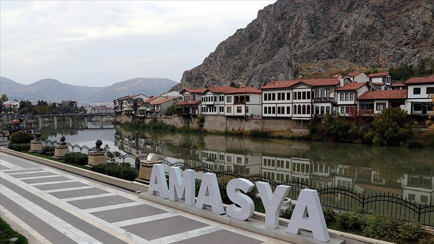
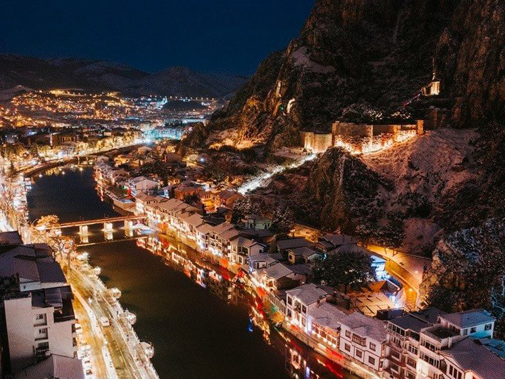

AMASYA

AMASYA YALI BOYU EVLERİ (2020)

AMASYA'YA TEPEDEN BAKIŞ (2020)
Amasya, Türkiye'nin Karadeniz Bölgesi'nde bulunan bir ildir. Bölümü Orta Karadeniz'dir.
Amasya il nüfusu 2020 yılında %0,68 azalarak 423.011'e düşmüştür. Bu nüfusun %74,2'si şehirlerde yaşamaktadır. İlin yüzölçümü 5628 km2'dir. İlde km2'ye 60 kişi düşmektedir. (Bu sayı Suluov'da 104'tür.) İl merkezinin denizden yüksekliği: 400 m.'dir.
2018 yılında TÜİK verilerine göre merkez ilçeyle beraber 7 İlçe, 8 belediye, bu belediyelerde 107 mahalle ve ayrıca 372 köyü vardır.
Amasya'nın bilinen ilk adı "Amaseia"'dır. Bu isim dünyanın ilk coğrafyacısı olarak bilenen Strabon tarafından verilmiştir. "Amaseia" amozonlardaki yaşayan halkın kraliçelerine verdikleri isimdir.
Amasya'nın güzelliklerini görmek ve bilgi almak için menüden istediğiniz sekmeye tıklayarak gezintiye devam edebilirsiniz..
Copyright © 2021 Tüm Hakları RIFAT DOĞAN' da Saklıdır.